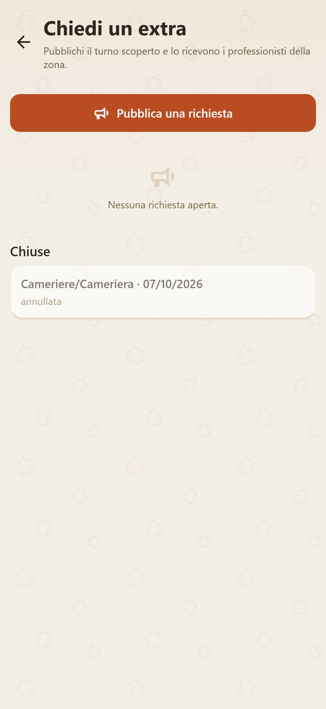
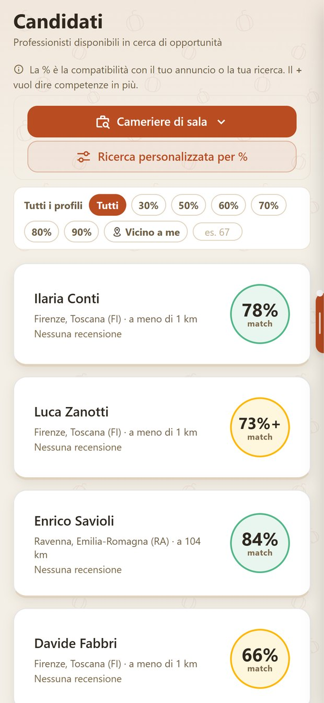
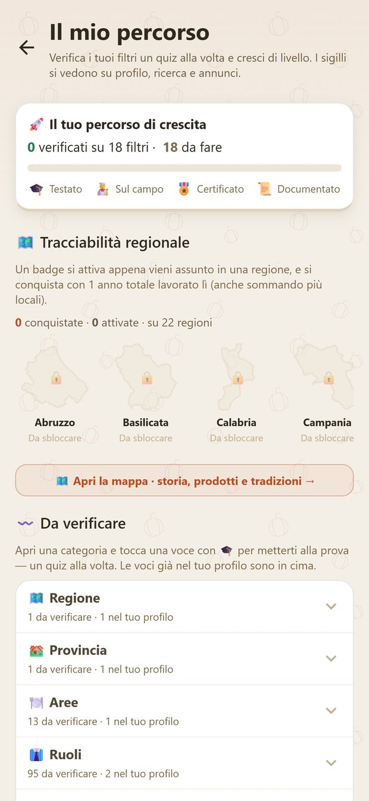
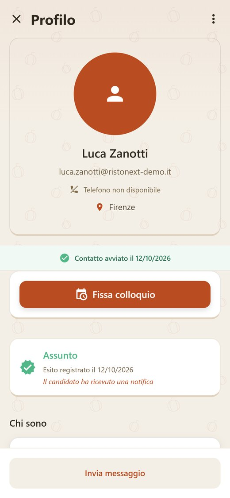
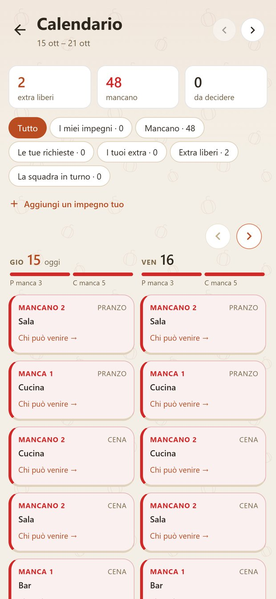
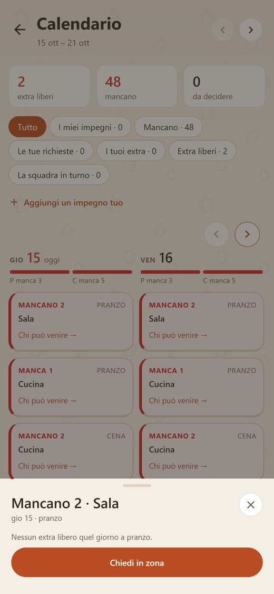
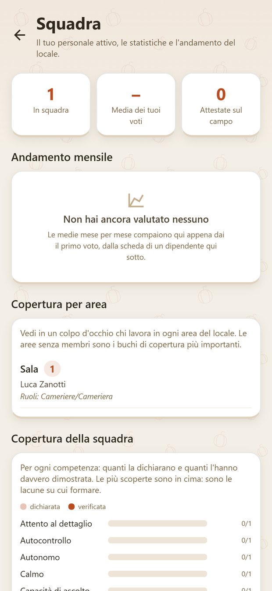

Stasera manca uno. Chi viene?
Un'app per iPhone e Android per ristoranti e alberghi. Annunci, candidati, turni ed extra in un posto solo.


Per chi assume in sala, cucina, bar e ricevimento.
È pensata per titolari, responsabili di sala, chef e direttori d'albergo.
RistoNext mette in contatto il locale con camerieri, cuochi, baristi e receptionist della zona. Prima che si incontrino, calcola quanto sono compatibili.
Nelle pagine che seguono c'è ogni funzione che il locale vede nell'app. Per ognuna: il problema, cosa risolve oggi, cosa cambia col tempo.
Pubblicare un annuncio è gratuito.Michele Ricciardi, RistoNext
Tutta l'app del locale, pagina per pagina.
Cosa vive oggi un locale.
- Il turno scoperto.Alle sei arriva il messaggio: stasera non vengo. Parte il giro di telefonate.
- L'extra che non si presenta.Aveva detto sì su un vocale. Il sabato non arriva.
- Il colloquio a vuoto.Viene, sente la paga, se ne va. Un'ora persa per tutti e due.
- I turni nel gruppo di chat.Cambiati tre volte, letti da metà della squadra.
Il colloquio a vuoto parte dall'annuncio.
Nell'annuncio si scrivono ruolo, contratto, orari, zona e paga. Senza retribuzione l'annuncio non si pubblica.
Contratti: tempo pieno, part-time, stagionale, determinato, indeterminato.
la paga è un campo obbligatorio
Oggi
Chi si candida conosce già la paga. Al colloquio arriva chi l'ha accettata.
Col tempo
Il locale che scrive la paga si riconosce. Le candidature arrivano da chi è interessato davvero.
Tanti curriculum. Quale si legge prima?
Ogni professionista ha una percentuale di compatibilità col tuo annuncio. I candidati arrivano in ordine, dal più compatibile.
La percentuale si vede su ogni scheda.

Oggi
Si comincia dai più compatibili. Gli altri restano in lista.
Col tempo
Meno colloqui fatti per niente. Più tempo per il servizio.
Ti serve un cuoco, non cento profili.
Si cerca per ruolo e per soglia di compatibilità. Con "Vicino a me" si vede chi abita a pochi chilometri.
Non serve aspettare che scrivano: il locale cerca e contatta.
Oggi
Trovi chi ha il ruolo giusto ed è vicino, senza aspettare.
Col tempo
Il locale si fa una lista di persone della zona da richiamare.
Sul curriculum sono tutti bravi.
Il professionista supera quiz a livelli e ottiene un sigillo. Il titolare con cui ha lavorato attesta le competenze sul campo.
Il locale vede cosa è dimostrato e cosa è solo dichiarato.

Oggi
Distingui chi dichiara da chi ha dimostrato.
Col tempo
Chi lavora bene si porta dietro le prove, da un locale all'altro.
Aspetti un candidato che non arriva.
Dalla scheda si contatta e si fissa il colloquio, con data e ora. Il candidato riceve la notifica e risponde.
Se cambi data o ora, l'avviso gli arriva da solo.

Oggi
Sai chi ha confermato prima di aspettarlo.
Col tempo
Contatto, colloquio e assunzione restano in ordine, per ogni persona.
Il tuo numero gira tra sconosciuti.
Si scrive al candidato dentro l'app. Le conversazioni di lavoro stanno in un posto solo.
Chi disturba si blocca o si segnala.

Oggi
Il lavoro resta fuori dal telefono personale. Gli accordi restano scritti.
Col tempo
Quando richiami qualcuno, trovi tutto quello che vi siete detti.
I turni nel gruppo, letti da metà squadra.
Il locale assegna i turni della settimana: colazione, pranzo, cena. Ognuno li trova nel suo calendario, con la notifica.
I colleghi si scambiano i turni. Un turno rimasto libero si prende con un tocco.

Oggi
Un calendario solo, uguale per tutti.
Col tempo
Meno "non lo sapevo". La settimana si vede a colpo d'occhio.
Alle sei: stasera non vengo.
Il calendario segna il buco: "Manca 1 · Sala · cena". Un tocco e compaiono le persone disponibili quella sera, con la distanza.
Il turno va a chi della squadra è libero. Oppure diventa una richiesta di extra.

Oggi
Vedi chi può venire, invece di chiamare tutti.
Col tempo
Il locale impara su chi può contare.
Serve uno solo per sabato.
I professionisti pubblicano i giorni in cui sono liberi. In "Cerca Extra" scegli la data scoperta e vedi chi è disponibile.
L'extra si ingaggia senza colloquio.
Oggi
L'extra si trova anche fuori dalle conoscenze.
Col tempo
Un giro di extra della zona che tornano, perché si sono trovati bene.
L'accordo preso su un vocale.
La proposta arriva completa: giorno, fascia, ruolo, compenso, un messaggio. Il professionista accetta con "Lo prendo".
Il calendario si aggiorna da solo.

Oggi
Tutti e due sanno cosa è stato deciso, per iscritto.
Col tempo
Dopo il lavoro ci si dà un voto. Chi si presenta si fa un nome.
Chi sa fare cosa, nella tua squadra?
Personale attivo, andamento del mese, copertura per competenza, affinità tra colleghi.
Le competenze scoperte stanno in cima: sono quelle su cui formare.

Oggi
Vedi dove la squadra è scoperta.
Col tempo
Formi chi c'è e cerchi solo quello che manca.
Quello che c'è intorno.
- Riunioni.Inviti la squadra a briefing e riunioni. L'invito arriva nelle notifiche.
- Valutazioni.Dopo un lavoro ci si dà un voto, da tutte e due le parti.
- Deleghe.Affidi a un collaboratore alcune cose, per esempio i turni.
- Dimissioni.Arrivano dentro l'app, per iscritto.
- Ingresso.Con l'impronta o col volto.
Tutti i reparti, in un'app sola.
Dalla sala alla portineria: il locale pubblica per il reparto che gli serve.
I ruoli di ogni reparto si scelgono nell'app.
Cosa cambia usandola.
Meno telefonate. Sa chi ha confermato, chi è libero, chi manca.
Turni scritti, scambi chiari, competenze riconosciute.
Proposte per iscritto, voti dopo il lavoro. Chi è serio si fa un nome.
Gli annunci con la paga scritta diventano la norma.
Per il locale si comincia gratis.
Pubblicare annunci, turni, squadra ed extra è gratuito. Gli abbonamenti si scelgono solo se servono.
Gratuito per il locale
- Pubblicare annunci
- Turni e calendario
- La squadra
- Extra e proposte
Gratuito per chi lavora
- Profilo e annunci
- Candidature e colloqui
- Messaggi e notifiche
- Turni ed extra
Nella tua zona ci sono ancora pochi profili? L'annuncio resta pubblicato. Chi apre l'app lo vede, anche prima di iscriversi.
+39 351 717 3727 · WhatsApp
ristonext.com
App Store · Google Play
Seguiamo anche i locali con una consulenza su marketing, personale, operatività e organizzazione e, se serve, sui conti. Scriveteci per parlarne.